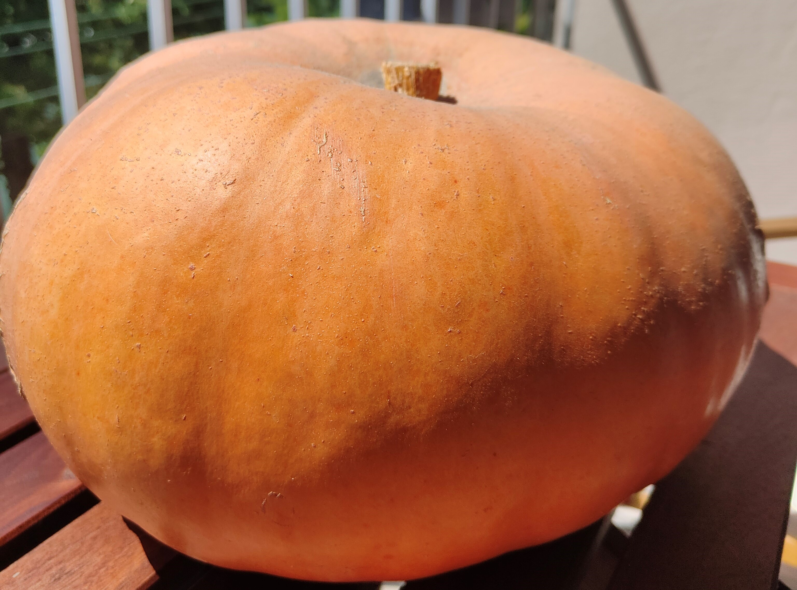
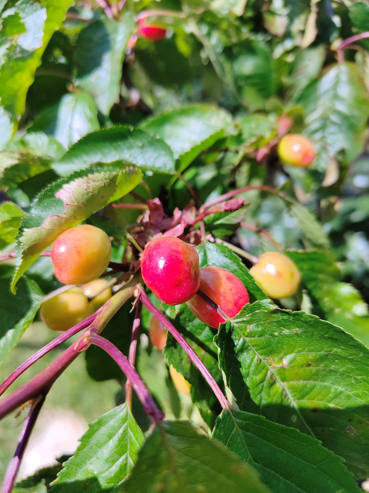

Hormones de bouturage
Obtenue à partir de jeunes bourgeons de saules ou de bouleaux. Permet de multiplier rosiers, cassissiers, framboisiers, vignes, etc…

Macérations pour renforcer
Fabriquées à partir d’œufs, lait, glutamate de cuisine, eau de rinçage du riz, etc... Permet d’obtenir des bactéries pour l’eau des arrosoirs qui aident les plantes à se nourrir.

Purins pour nourrir et soigner
Fabriqués à partir des orties, prêles et consoudes récoltés sur place. Permet de prévenir certaines maladies, nourri les plantes du potager et les fruitiers.